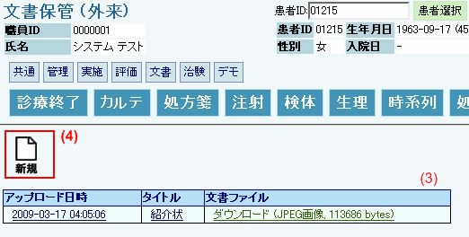
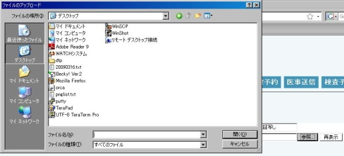

１５ 文書管理
１．文書保管
（１）文書メニューから「文書保管」を選択します。
（２）文書保管画面が展開します。

（３）これまでに登録された文書があれば、リストが表示されます。
（４）新しく文書を登録する場合「新規」を選択します。
（５）登録文書編集画面です。
（６）タイトルは、文書一覧に表示されますので、あとで探し易いように命名します。
（７）参照ボタンを押すと、操作端末にあるファイル選択画面が立ち上がります。
この画面で目的のファイルを選択します。

（８）選択後、登録完了ボタンを押すと、新規文書が作成され、リストに追加されます。